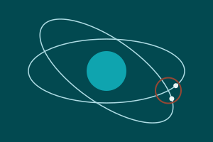

Can Dağdeviren is a geomatics engineering student at Hacettepe University. He works with LiDAR, orthophotos and web maps, and when he is not in front of a screen, he is out on the water sailing.
 About me
About me
Here you will find his GIS and remote sensing work, two web maps, and a little about life on a sailing boat.
2026–2027, Graduation project (in progress)
Conjunction Data Message Analysis Portal

2026, ELTEMTEK
LiDAR Point Cloud Processing

2026, ELTEMTEK
Orthophoto Production

2026, ELTEMTEK
Transmission Line Violation Analysis

On the water


I started sailing as a hobby and carried it on at the Hacettepe University Sailing Club. I regularly teach sailing courses, race in university sailing competitions, and enjoy introducing new people to the sport.
Background
Between March and August 2026 I worked in the GIS unit at ELTEMTEK, processing LiDAR point clouds, producing orthophotos and analysing violations along energy transmission lines.
Interests
GIS, remote sensing, LiDAR, photogrammetry, GNSS and Web GIS.
Contact
Email: candagdeviren@hacettepe.edu.tr
GitHub: github.com/candagdeviren